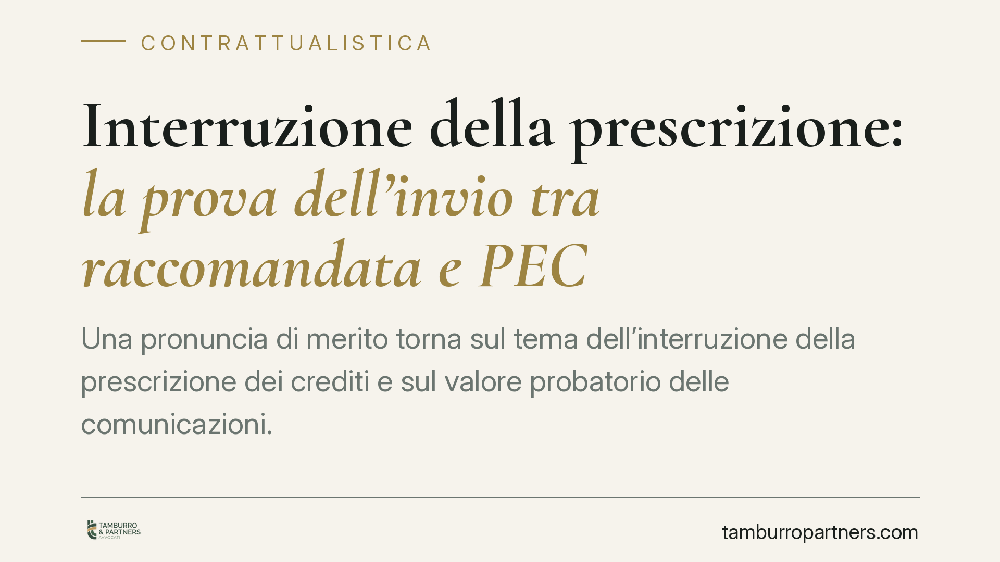

Interruzione della prescrizione: la prova dell'invio tra raccomandata e PEC
Una pronuncia di merito torna sul tema dell'interruzione della prescrizione dei crediti e sul valore probatorio delle comunicazioni. Il punto chiave non è la semplice spedizione, ma la prova che l'atto sia giunto all'indirizzo del debitore. Qui raccomandata cartacea e PEC seguono logiche diverse: capire quale documento conservare fa la differenza tra un credito tutelato e un credito prescritto.

Il caso
Una recente sentenza del Tribunale di Cassino (gli estremi esatti sono da confermare: il dato numerico e l'anno circolati nelle prime segnalazioni richiedono riscontro presso la cancelleria) affronta un problema ricorrente nel recupero crediti: quale documentazione basta a dimostrare l'avvenuta interruzione della prescrizione.
La questione pratica è semplice. Il creditore invia una diffida. Il debitore, in giudizio, nega di averla ricevuta. Su chi grava l'onere di provare cosa? La risposta cambia a seconda del mezzo utilizzato.
Inquadramento normativo
Il credito si estingue per prescrizione se il titolare non lo esercita entro il termine di legge: dieci anni è il termine ordinario (art. 2946 c.c.), salvo le numerose ipotesi di prescrizione più breve.
La prescrizione si interrompe, tra l'altro, con la costituzione in mora del debitore (art. 2943 c.c.). La costituzione in mora si realizza mediante un'intimazione o richiesta fatta per iscritto (art. 1219 c.c.). L'atto scritto, quindi, è indispensabile.
Qui entra in gioco l'art. 1335 c.c.: la dichiarazione diretta a una persona determinata si reputa conosciuta nel momento in cui giunge all'indirizzo del destinatario, salvo che questi provi di essere stato, senza sua colpa, nell'impossibilità di averne notizia. Due aspetti meritano attenzione.
Primo: la norma non parla di spedizione, ma di arrivo all'indirizzo. Non basta aver imbucato la raccomandata; occorre che essa sia pervenuta al recapito del debitore.
Secondo: la presunzione di conoscenza è relativa. Una volta provato che l'atto è giunto all'indirizzo, è il debitore a dover dimostrare l'impossibilità incolpevole di averne notizia. L'onere della prova, su questo profilo, si sposta su di lui. È un orientamento consolidato in giurisprudenza di legittimità, che da tempo àncora all'art. 1335 c.c. il meccanismo della presunzione di conoscenza per le comunicazioni recettizie.
Raccomandata cartacea e PEC: due prove diverse
La distinzione è decisiva e va tenuta ferma.
Raccomandata cartacea. Non è sufficiente la ricevuta di spedizione. Per attivare la presunzione dell'art. 1335 c.c. serve la prova dell'arrivo all'indirizzo del destinatario: tipicamente l'avviso di ricevimento firmato o, in caso di mancato recapito, l'attestazione di giacenza o di tentata consegna all'indirizzo corretto. È l'arrivo al recapito, non l'invio, a far scattare la presunzione.
PEC. La logica è analoga nel risultato, ma lo strumento probatorio è diverso. La Ricevuta di Avvenuta Consegna (RAC) attesta che il messaggio è stato depositato nella casella del destinatario. Qui consegna e arrivo all'indirizzo coincidono: la RAC prova direttamente il momento rilevante ai sensi dell'art. 1335 c.c. Per questo la PEC offre, di regola, una prova più lineare rispetto alla raccomandata.
In entrambi i casi, provato l'arrivo all'indirizzo, spetta al debitore dimostrare l'eventuale impedimento incolpevole.
Implicazioni pratiche
Per il creditore – impresa o professionista – il messaggio è netto: archiviare solo la ricevuta di spedizione della raccomandata è un errore. In caso di contestazione quella ricevuta, da sola, non dimostra che l'intimazione sia giunta al debitore.
Per chi invia PEC la situazione è più solida, purché si conservi la RAC e non la sola ricevuta di accettazione, che attesta unicamente la presa in carico dal proprio gestore.
Va ricordato che si tratta di una pronuncia di merito, priva di valore vincolante per altri giudici. Serve a leggere un orientamento, non a fondare certezze.
Cosa fare in concreto
- Individua l'indirizzo corretto del destinatario prima di inviare: per imprese e professionisti consulta l'INI-PEC, il registro pubblico degli indirizzi PEC.
- Privilegia la PEC quando il destinatario ne ha una: conserva la Ricevuta di Avvenuta Consegna, non la sola ricevuta di accettazione.
- Per la raccomandata cartacea, conserva l'avviso di ricevimento o, in caso di mancato recapito, l'attestazione di giacenza o tentata consegna all'indirizzo esatto.
- Archivia tutto in modo ordinato e duraturo: copia dell'atto, prova dell'arrivo e data certa, perché su quella data si misura l'interruzione.
- Verifica i termini di prescrizione prima di agire e rinnova l'interruzione con congruo anticipo: non attendere l'ultimo giorno utile.
Disclaimer
Contributo informativo a cura di Tamburro & Partners - Avv. Giuseppe Tamburro. Non costituisce parere legale.
Ogni contratto ha il suo equilibrio.
Se vuoi una revisione delle clausole o una redazione su misura, scrivi allo studio. Ti rispondiamo entro un giorno lavorativo.